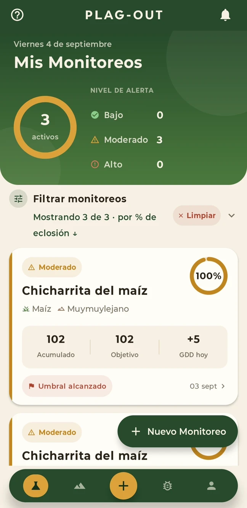

Tecnología que cuida tus cultivos
No esperes
a ver la plaga
Tu campo habla. Nosotros te ayudamos a escucharlo.
Próximamente en Android
Una mirada a la app

Cada lote, su monitoreoEl clima se transforma en información
01 / Así de simple
Tu campo,
más cerca
Del terreno al aviso, en una sola app
Elige un paso para verlo en la app
Un recorrido real por tu campo
Explora un terreno, su cultivo y sus monitoreos.
Dentro de Plag-Out
Grabación real · Sin audio · Datos de demostración
Del primer lote al aviso
Tu recorrido en cinco pasos
Carga tus cultivos
Inicia monitoreos
Realiza reportes
Recibe alertas
02 / En tu día a día
Sal al campo
con una idea más clara
¿Dónde mirar?
Monitoreos
Lote norteAlto
Lote surBajo
Consulta el riesgo de cada lote para orientar tu recorrido de campo.
¿Cuándo monitorear?
Aviso
Umbral alcanzado
El monitoreo llegó al margen que elegisteRecibe una alerta al alcanzar tu umbral, antes de completar el objetivo de GDD.
¿Qué observar?
Durante el recorrido
Estimación de la appObservación en campo
Revisa la plaga que estás monitoreando y registra lo que encuentras en el lote.
03 / La ciencia detrás
GDD y Biofix
Dos conceptos para entender cuándo puede desarrollarse una plaga
GDD
Grados Día de CrecimientoEl calor acumulado desde el inicio del conteo, que los modelos relacionan con el desarrollo de la plaga.
Se recalcula una vez al díaBiofix
El inicio del conteoUn evento biológico, como la primera aparición de adultos, marca el inicio del conteo. Si cambia esa fecha, cambia la estimación.
Así se acumula el calor
hasta el aviso
Cuando los GDD alcanzan tu umbral, recibes una alerta.
GDD acumuladosUmbral del 80 %
El aviso llega antes del objetivoDía 33 · 400 de 500 GDD · Umbral 80 %
Ejemplo ilustrativo. Los tiempos dependen de la plaga y del clima.
04 / Niveles de alerta
Una señal fácil de interpretar
El nivel estima la población esperada según las condiciones ambientales
Bajo
Condiciones poco favorables para la plaga. Se espera una población baja.
Moderado
Algunos períodos favorables. Se espera una población intermedia.
Alto
Condiciones muy favorables. Se espera una población alta.
La estimación complementa el monitoreo en campo. No mide la presencia actual de la plaga ni reemplaza el criterio agronómico.
¿Necesito internet en el campo?
Puedes consultar los datos guardados en tu teléfono sin conexión. Para actualizarlos necesitas internet; la copia local puede estar desactualizada.
¿De dónde salen los datos del clima?
De las coordenadas de cada terreno. Con esos datos climáticos, Plag-Out recalcula diariamente los GDD de los monitoreos activos.
¿Qué pasa cuando comienza un nuevo ciclo?
Al completar los GDD de una generación, la app avisa de un nuevo biofix y reinicia el conteo. La estimación depende del modelo de cada plaga.
¿Reemplaza el monitoreo en campo?
No. Ayuda a decidir dónde y cuándo observar. Aplicar un control requiere observación en campo y criterio agronómico.
¿Cuándo estará disponible? ¿Y en iOS?
Preparamos pruebas piloto sin costo en Android. iOS está en los planes, todavía sin fecha.
Crezcamos juntos
El próximo paso
empieza en tu campo
Prueba Plag-Out y ayúdanos a mejorarla con tu experiencia en campo.
Prueba piloto GRATISExclusivamente para Android
Quiero sumarme a la prueba piloto
Al sumarte al piloto, recibirás las instrucciones para instalar Plag-Out en Android.